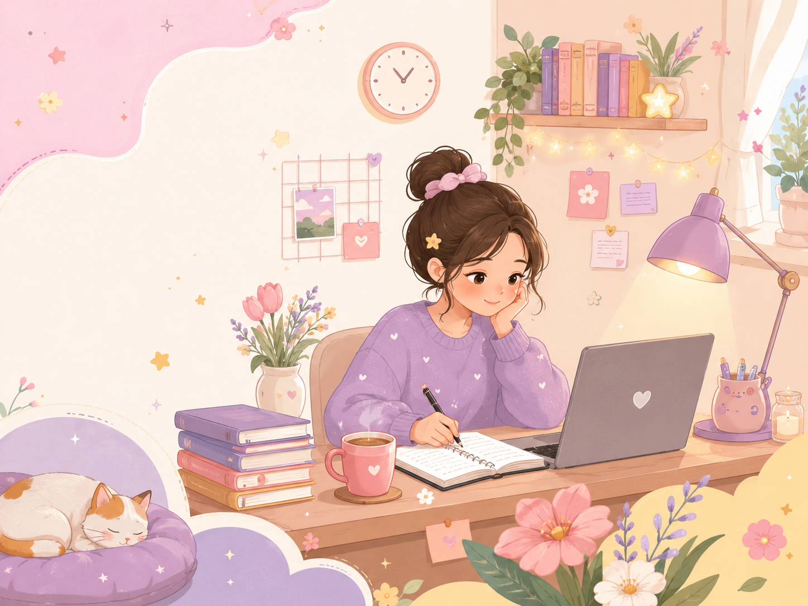

Pick a time
Choose a study slot that fits your schedule.
Online study room · Netherlands time
A small online study room for reading, writing, research, and quiet work.
We say hi, name what we are working on, settle into silence, take a short break, and come back to finish.

quiet study cornerThis is for the days when starting alone feels harder than the work itself. Come with one clear task, stay for the room, and leave with a little more done than before.
Joining the room
Easy and low-pressure. I just like to know who is coming in, so the room stays calm and useful.
Choose a study slot that fits your schedule.
Tell me what you are working on and how often you would like to join.
I look over each note first, mostly to keep the room small, focused, and comfortable.
If there is space, I will send the session link and details by email.
Gentle but real
You do not need to be perfect. You do need to be respectful, on time, and ready to work.
Come study with us
Pick one of the Monday, Tuesday, or Wednesday slots in Netherlands time, answer a few small questions, and I will review the request before sharing the private room link.
If you are approved for regular access, you can keep joining without asking again each time.
Individual Monday, Tuesday, and Wednesday sessions through 15 August · Netherlands time, with your local time below
After you request a slot, I will check the note first. If it fits, you will get the private room link. Regulars only need approval once.
Request a seat
This keeps the room from becoming random or noisy. Short answers are completely fine.
A few things I may ask
What is your current study or work level?
What will you usually work on during sessions?
Do you want to join once, regularly, or whenever you can?
About the host
a PhD student who struggles to read for long hours, but still somehow signed up for a PhD programme. A little paradoxical, right?
That is why I created this space. I focus better when someone else is quietly studying or working in front of me. It helps me sit longer, feel less alone, and slowly return to the work I keep avoiding.
This room is for people like me — people who want to read, write, think, research, edit, and make progress, but sometimes need a little structure and quiet company to actually do it.